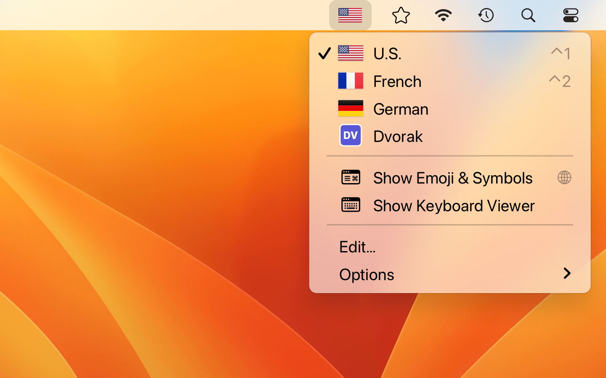

Keyboard Switcheroo
Language Input Menu with Flags
App Details
Name: Keyboard Switcheroo
Subtitle: Language Input Menu with Flags
Developer: Adam Overholtzer (@aoverholtzer), owner of Overdesigned, LLC. Adam is an indie developer and father of two dad living in California.
Platform: macOS 12.3+
Price: US$1.99, paid app
Description
Switch keyboard languages with ease! Switcheroo is a menubar app that shows your input sources with colorful flags — or with a custom image of your choosing! Use the menu to switch, add, or remove input sources with just a few clicks. It’s the perfect app for polyglots and vexillologists alike.
- Customizable icons for your current input source (i.e., keyboard language) improves the recognizability and accessibility of the Input menu.
- Choose from flags, emoji, common symbols, or default icons — or select any image from your computer.
- Change inputs from the menu, or supercharge your workflow by setting customizable keyboard shortcuts.
- Activate special inputs like the emoji picker and keyboard viewer right from the menu or via hotkeys. Switcheroo is a full drop-in replacement for the system Inputs menu!
- Is your menu bar hidden or too crowded with icons? Pop-out the floating Switcheroo window automatically!
- Automate your input sources using Shortcuts.
If you find any languages or icons missing, please contact me at adam@overdesigned.net or @aoverholtzer on Twitter!
Keyboard Switcheroo was featured on Daring Fireball by John Gruber, who called it “polished”.
Screenshots
